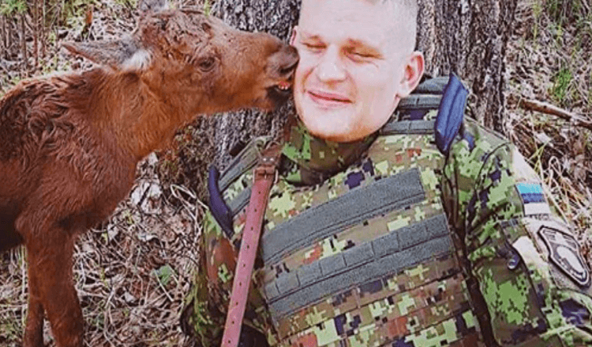

Lost Baby Moose Finds Soldier In Forest And Asks Him For Help

During military exercises in the forests of Estonia, one soldier was called upon to aid a furry fellow citizen in the midst of a real life-and-death situation.

Erich Jyri Prikko is a conscription member of the Estonian defense force, and was recently stationed with a unit near the shores of Lake Võrtsjärv. It was there, last week, that Prikko decided to venture into the woods in search of, as he put it, an âalternative bathroom.â But then a different sort of call of nature gripped him, writes heaveanofanimals.com âI heard some funny voices that reminded me a cat or a small baby,â Prikko told The Dodo. âI noticed some kind of a cute animal walking towards me. At first he reminded me a dog, but pretty quickly I realized it was a small baby moose trying to tell me something.â The moose calf was there all alone. Not wanting to add to the animalâs distress, Prikko decided to sit down in hopes the baby moose would wander back toward his mother, wherever she might be. But instead, this happened. âHe slowly walked towards me,â Prikko said. âHe was quite shy at first, but he finally decided that I seemed to be trustworthy and came very close to me.â

Prikko was taken aback â but then the moose calf went one step further. âHe even tried to find something under my armpit,â Prikko said. âHe might have thought that I have mammary glands.â

The baby moose, it seemed, had quickly come to consider the soldier his mother. Prikko could not fulfill the request, of course, but the hungry calf nevertheless seemed comforted by his gentle presence alone. It was then that Prikko decided to help in another way.

âI called our veterinary office and let them know what happened,â Prikko said. âI wanted to do more for the small calf and wanted to ask what should I do.â Prikko was told to return the calf to where he was found, and to monitor the situation. Because of Prikkoâs report, a vet was dispatched to the scene with a bottle of milk to feed the baby moose just in case his mother failed to return. It was difficult to leave the calf there all alone â but the move paid off.

Prikko and his unit did their best to avoid disturbing the area, in case the calfâs mother would be spooked away. And, sure enough, after hearing a moose call in the night, Prikko awoke to find the baby was gone. âWe noticed very fresh big moose footprints that indicated that the small calf had been rescued by his mother,â Prikko said. All, apparently, had been set right.

As a soldier, Prikko considers it his duty to protect animals, too â and in this case, he accomplished that mission perfectly. âI wanted the calfâs mother to find him and I was very satisfied when we found out that they really found each other.â Truly a job well done.